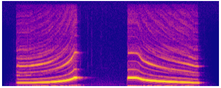

9. The Short-time Fourier Transform¶
{kind=link}
The Fourier transform, as presented in earlier chapters, provides a view of signals in terms of different frequencies. The comparison between the input signal and the Fourier basis involves a sample-wise product and sum over all samples to produce a single DFT component \(\darkblue{X[m]}\). Implicitly, this is assuming that frequency content is somehow “stationary” or unchanging over the duration of the signal. While this may be a reasonable assumption for short signals that loop indefinitely, it does not apply to reasonably long signals, whose frequency content may be expected to change over time. (For instance, speech or music!)
In this chapter, we will see how to relax the assumption of stationarity, providing a time-frequency representation of signals that analyzes frequency content only over short intervals. This so-called Short-Time Fourier transform (STFT) is a fundamental tool in analyzing dynamic signals, and has a long history of use in speech processing [AR77, FG66].